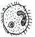
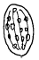
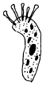
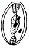

수산양식기능사 (2001-07-22 기출문제)
1과목: 수산양식
1. 대합의 종묘 발생장으로 가장 적합한 장소는?
- 풍파가 적은 조용한 내만인 곳
- 해수의 유통이 잘되는 외해에 직면 한곳
- 비교적 지반이 낮은 간석지의 사니질인 곳
- 와류가 생기기 쉬운 하구가까이의 삼각주 부근
(정답률: 80%)

2. 김의 종류 중 중성포자를 가장 늦게까지 방출하는 김은?
- 둥근김
- 참김
- 방사무늬김
- 긴잎돌김
(정답률: 70%)
3. 김사상체 배양관리기간 중 수온의 변화에 따른 조도(밝기) 조절이 옳은 것은?
- 수온 상승에 따라 어둡게 한다.
- 수온 상승에 따라 밝게 한다.
- 수온과는 관계없이 성장과정에 따라 조절한다.
- 수온과 관계없이 일정조도를 유지한다.
(정답률: 82%)
4. 김의 사상체 배양시 영양분이 부족하면 무슨 색으로 변하는가?
- 붉은색
- 오렌지색
- 녹색
- 갈색
(정답률: 알수없음)
5. 다음 잉어의 양어지 중 일반적으로 가장 수심이 깊어야 하는 것은?
- 월동지
- 양성지
- 부화지
- 산란지
(정답률: 알수없음)
6. 잉어의 친어로서 가장 좋은 암수의 연령은?
- 암컷 3년, 수컷 2년 정도
- 암컷 3년, 수컷 5년 정도
- 암컷 10년, 수컷 4∼5년 정도
- 암컷 5년, 수컷 7∼8년 정도
(정답률: 알수없음)
7. 방어치어를 선별하는 이유 중 가장 타당한 것은?
- 운반에 편리하기 때문이다.
- 공식을 방지하기 위해서이다.
- 큰것과 작은 것은 방류하기 위해서이다.
- 어병예방 소독이 편리하기 때문이다.
(정답률: 알수없음)
8. 방어 양식에 있어 방어가 가장 좋아하는 사료는?
- 까나리
- 새우
- 정어리육
- 밴댕이
(정답률: 알수없음)
9. 가리비의 주 산란시기의 범위에 해당되는 것은?
- 1∼2월
- 3∼4월
- 5∼6월
- 7∼8월
(정답률: 알수없음)
10. 숙성이가 많이 생기는 것과 관계가 먼 것은?
- 먹이가 부족할 때
- 먹이 알갱이가 클 때
- 먹이가 고르지 못할 때
- 해적생물이 많을 때
(정답률: 80%)
11. 담수양어장을 시설할 때 모임지(Kettle)를 만드는 주된 이유는?
- 어류의 먹이장소로 이용하기 위함이다.
- 어류의 산란장소를 제공하기 위함이다.
- 어류의 놀이장소를 제공하기 위함이다.
- 물을 뺄때 어류를 잡아내는 일을 쉽게 하기 위함이다.
(정답률: 알수없음)
12. 플랑크톤 네트를 사용한 후의 가장 좋은 관리방법은?
- 다음 사용시 까지 해수에 담가둔다.
- 다음 사용시 까지 담수에 담가둔다.
- 해수에 씻은 후 말려 둔다.
- 담수에 씻은 후 말려 둔다.
(정답률: 알수없음)
13. 미역 종묘 배양시의 씨줄틀로서 가장 적당한 자재는?
- PVC 파이프
- 철제 파이프
- 나무
- 대나무
(정답률: 알수없음)
14. 우렁쉥이 채묘용 종사로 가장 양호한 것은?
- 흑색 또는 흑갈색의 팜사
- 백색 크레모나사
- 밝은 황색 폴리에틸렌사
- 백색면사
(정답률: 알수없음)
15. 풍파에 안전하고 간만의 차가 심한 곳에 시설하는 방어양식 시설로 전형적인 것은?
- 그물 가두리식
- 그물 차단식
- 제방식
- 육상유수식
(정답률: 알수없음)
16. 순환여과식 양식에서 여과재료는 사육할 어류용적의 몇배 정도가 적당한가?
- 2배 정도
- 3배 정도
- 5배 정도
- 10배 정도
(정답률: 70%)
17. 다음 중 순환사육통의 3부분이 아닌 것은?
- 사육통
- 침전통
- 사료통
- 여과통
(정답률: 알수없음)
18. 최근 미국에서 많이 사용하고 있는 송어 알의 부화기는 어느 것인가?
- 히이드(Heath)부화기
- 야코오비(Jacobi)부화기
- 아트킨스(Atkins)부화기
- 코스테(Coste)부화기
(정답률: 알수없음)
19. 뱀장어 양성지에 있어서 물변화와 가장 관계가 깊은 동물은?
- 물벼륙류
- 장구벌레
- 실지렁이류
- 바퀴벌레류
(정답률: 80%)
20. 다시마의 종묘배양에 적당한 수온은 어느 정도인가?
- 수온 15 ∼ 16℃
- 수온 20 ∼ 23℃
- 수온 25 ∼ 30℃
- 수온 5 ∼ 8℃
(정답률: 알수없음)
2과목: 수산생물
21. 호수에서 하루 중 용존 산소량이 가장 적을 때는?
- 일출직전
- 오전 10시경
- 정오
- 일몰직전
(정답률: 알수없음)
22. 해양에서 수심이 깊어갈수록 플랑크톤이 감소하는 가장 큰 이유는?
- 수압이 점점 증가하기 때문이다.
- 수온이 낮아지기 때문이다.
- 비중이 높아지기 때문이다.
- 광선이 감소하기 때문이다.
(정답률: 알수없음)
23. 식물성 플랑크톤의 생태를 바르게 설명한 것은?
- 연안성은 영양염이 많고 염분이 높은 해역에 적응한다.
- 몸이 점액이나 한천질에 쌓여 있어 비중이 무겁다.
- 돌기가 있어서 몸의 표면적을 작게 하여 물과의 마찰이 적어 쉽게 가라앉는다.
- 엽록소를 가지고 광합성을 하므로 중요한 생산의 근원이 된다.
(정답률: 알수없음)
24. 이빨이 있는 고래 중 가장 크고 두개골 속의 기름은 정밀 기계에 이용되고 있는 고래는?
- 대왕고래
- 참고래
- 향고래
- 돌고래
(정답률: 알수없음)
25. 원구류에 있어서 가장 큰 형태적 특징은?
- 지느러미가 없다.
- 턱이 없고 입술은 빨판으로 되었다.
- 새끼는 바다로 내려가서 성장한다.
- 판상의 아가미를 갖고 있다.
(정답률: 알수없음)
26. 다음중 수산동물의 표지방류 표지방법이 아닌 것은?
- 체부분표지법
- 착색법
- 입묵법
- 혈구계산법
(정답률: 알수없음)
27. 경골어류의 전장을 옳게 설명한 것은?
- 몸의 앞끝에서 꼬리지느러미의 뒤끝까지의 직선거리
- 주둥이 끝에서 마지막 등뼈까지의 직선거리
- 주둥이 끝에서 항문까지의 직선거리
- 아감딱지에서 항문까지의 직선거리
(정답률: 알수없음)
28. 우렁쉥이에 대한 글 중 틀린 것은?
- 대부분이 암수 한몸이다.
- 원색동물이므로 성체에는 척색이 발달하고 있다.
- 무성적인 출아법으로도 번식한다.
- 유생은 올챙이 비슷하며 꼬리에 척색이 있다.
(정답률: 알수없음)
29. 갑각류 중 게류의 유생 변태과정이 바른 순서로 배열된 것은?
- 노플리우스기 - 조에아기 - 메갈로파기
- 메갈로파기 - 노플리우스기 - 조에아기
- 노플리우스기 - 조에아기 - 미시스 기
- 미시스 기 - 노플리우스기 - 조에아기
(정답률: 알수없음)
30. 다음중 홍조식물만으로 짝지어진 것은?
- 미역, 다시마
- 김, 우뭇가사리
- 파래, 청각
- 감태, 곰피
(정답률: 알수없음)
31. 다음 바닷말(해조류)중 포자에 편모가 없는 것은?
- 미역
- 우뭇가사리
- 다시마
- 참파래
(정답률: 알수없음)
32. 하구 부근에서 품질이 좋은 김이 생산되는 것과 가장 관계가 깊은 것은?
- 풍파가 적다
- 비중이 낮다
- 광선을 많이 받는다
- 영양염이 풍부하다
(정답률: 알수없음)
33. 오징어류의 특징을 말한 것이다. 잘못된 것은?
- 8개(4쌍)의 팔을 가진다.
- 수컷의 우측 제4팔은 교접팔이다.
- 소형어류나 부유갑각류 등을 먹으며 때로는 공식을 한다.
- 낮에는 깊은곳으로 밤에는 얕은곳으로 이동한다.
(정답률: 알수없음)
34. 다음 중 동형세대교번을 하는 해조류는?
- 김
- 미역
- 파래
- 다시마
(정답률: 알수없음)
35. 생물분류의 단계를 바르게 나타낸 것은?
- 과 - 목 - 문 - 강 - 속 - 종
- 과 - 목 - 문 - 강 - 종 - 속
- 문 - 강 - 목 - 과 - 종 - 속
- 문 - 강 - 목 - 과 - 속 - 종
(정답률: 알수없음)
36. 일명 콜룸나리스병이라고 일컬어지는 질병은?
- 아가미 부식병
- 믹소 볼루스병
- 세균성 백운병
- 적반경
(정답률: 알수없음)
37. 은어의 vibrio 병은 어느 시기에 가장 많이 발병되는가?
- 수온 10℃ 이하 일 때
- 수온 10∼16℃ 일 때
- 수온 20∼30℃ 일 때
- 수온 15℃ 이하로 식염농도 3‰이하 일 때
(정답률: 알수없음)
38. 물곰팡이의 효과적인 예방약제는?
- 테라마이신(teramycin)
- 후란다스-10(furandas-10)
- 말라카이트 그리인(malachite green)
- 머큐로크롬(mercurochrome)
(정답률: 알수없음)
39. 다음 그림에서 성숙한 백점충의 모양은?




(정답률: 알수없음)
40. 잉어의 등여윔병이 발생되는 주된 원인은?
- 단백질 부족
- 흡충류의 기생
- 산화된 지방의 독성
- 질소가스의 포화도가 높을 때
(정답률: 73%)
3과목: 양식장 수질관리 및 양식생물 질병
41. 조개류, 어류, 새우, 게 양식장에서 해적생물의 피해와 관계가 먼 것은?
- 낙지류
- 두드럭 고등류
- 불가사리류
- 해삼류
(정답률: 알수없음)
42. 대체로 본 건강한 물고기의 아가미 색깔은?
- 황색
- 검은새
- 짙은 홍색
- 연한 분홍
(정답률: 알수없음)
43. 유기물 오염이 심한 해에 이상 발생하는 일종의 내만성 오염지표 생물이라고 일컬어 지는 굴의 해적 생물은?
- 관덮개 꽃지렁이
- 물 우렁쉥이
- 따개비
- 진주담치
(정답률: 80%)
44. 2종의 독물이 상호작용해서 무독성이 되는 작용은?
- 길항작용
- 협력작용
- 영향작용
- 혐기작용
(정답률: 알수없음)
45. 염분이 생물에 미치는 영향은 매우 큰데, 수중의 염분이 변화하기 쉬운 곳으로 짝지어진 것은?
- 연안과 기수구역
- 연안과 원양구역
- 원양과 심해구역
- 심해와 해저구역
(정답률: 알수없음)
46. 송어양식에 요망되는 수중산소량의 최저 안전기준은?
- 3 mg/ℓ
- 5 mg/ℓ
- 7 mg/ℓ
- 10 mg/ℓ
(정답률: 알수없음)
47. 물속에 있어서 자연적인 산소의 공급원이 되는 것은?
- 수중동물의 호흡
- 유기물질의 분해
- 수중식물의 호흡
- 수중식물의 광합성
(정답률: 알수없음)
48. 양어지에서 수중산소의 보충방법이 아닌 것은?
- 물을 교반한다.
- 공기를 주입한다.
- 물을 교환한다.
- 유기물을 제거한다.
(정답률: 알수없음)
49. 해수의 표면수온 변화범위를 바르게 나타낸 것은?
- 12 ∼ 38℃
- 2 ∼ 35℃
- -2 ∼ 30℃
- -12 ∼ 18℃
(정답률: 알수없음)
50. 해수의 비중과 가장 관계가 깊은 것은?
- 염소량
- 조류속도
- 조류방향
- 수소이온농도
(정답률: 80%)
51. 포렐 수색계 (Forel scale)는 몇단계의 색으로 되어 있는가?
- 7단계
- 9단계
- 11단계
- 13단계
(정답률: 알수없음)
52. 해양에서 투명도 측정용 투명도판의 크기는?
- 10cm인 백색원판
- 20cm인 백색원판
- 30cm인 백색원판
- 50cm인 백색원판
(정답률: 알수없음)
53. 해수에서 염분 계산공식으로 옳은 것은?
- 염분 = 1.8⑤ × 염소량 + 0.03
- 염분 = 1.80655 × 염소량
- 염분 = 1.8⑤ × 0.03 + 염소량
- 염분 = 1.8⑤00 × 염소량
(정답률: 알수없음)
54. 다음 중 물의 pH를 바르게 나타낸 것은?
- pH 1~7은 알칼리성을 나타낸다
- pH 7~8은 중성을 나타낸다
- pH 의 범위는 1~12 이다
- pH는 수중에 용해된 수소 이온의 농도를 나타낸 것이다
(정답률: 알수없음)
55. 경도를 측정할 때 사용되는 적정 용액은?
- CaCO3
- EBT
- EDTA
- HCl
(정답률: 80%)
56. pH 지시지를 어떤 용액에 넣었을 때 색깔이 진한 갈색으로 변했다면 그 용액의 수소이온농도는?
- 약한 산성
- 강한 산성
- 약한 알칼리성
- 강한 알칼리성
(정답률: 알수없음)
57. 용존산소량을 측정할 때의 정확한 채수법은?
- 비이커로 채수병에 물을 부어서 기포가 많이 생기도록 채수한다.
- 용량이 정확한 채수병을 물에 완전히 담구어 빠르게 채수한다.
- 채수병의 위치를 낮추고 물을 한방울씩 떨어뜨려 천천히 채수한다.
- 채수병에 기포가 들어가지 않도록 사이펀을 사용하여 채수한다.
(정답률: 알수없음)
58. 다음 중 가장 높은 DO량을 요구하는 어류는?
- 붕어
- 송어
- 잉어
- 블루우길
(정답률: 80%)
59. 인간의 활동에 의한 수질오염도 판정에 많이 이용되는 세균은?
- 대장균
- 포도당균
- 고초균(枯草菌)
- 적리균(赤痢菌)
(정답률: 알수없음)
60. 수질과 저질의 환경 개선책으로 접합치 않은 것은?
- 블로워 펌프에 의한 산소보충
- 투석
- 객토
- 인공부화 방류
(정답률: 알수없음)